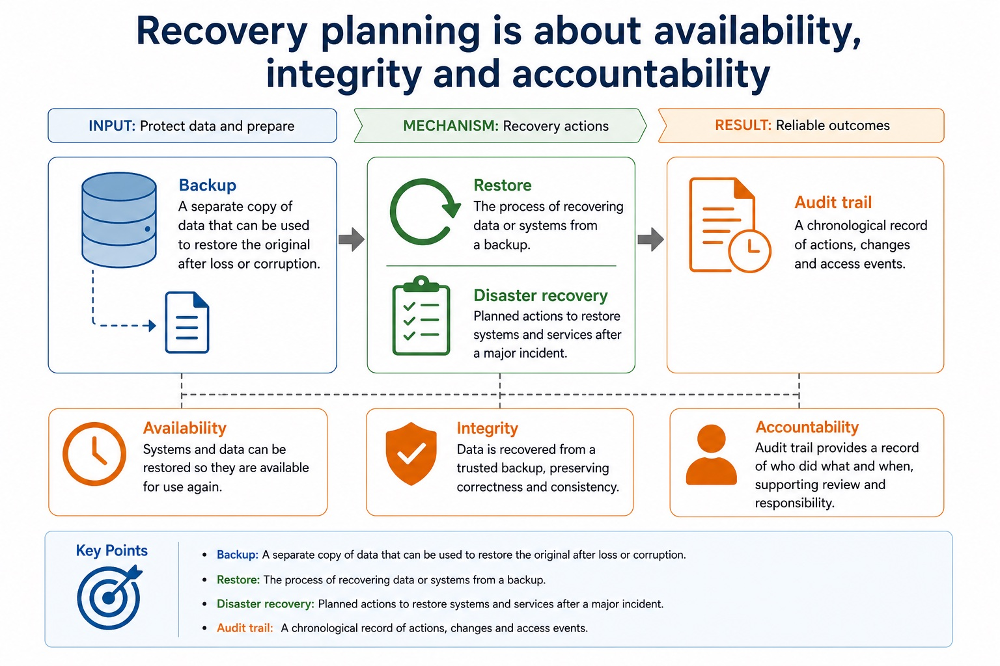
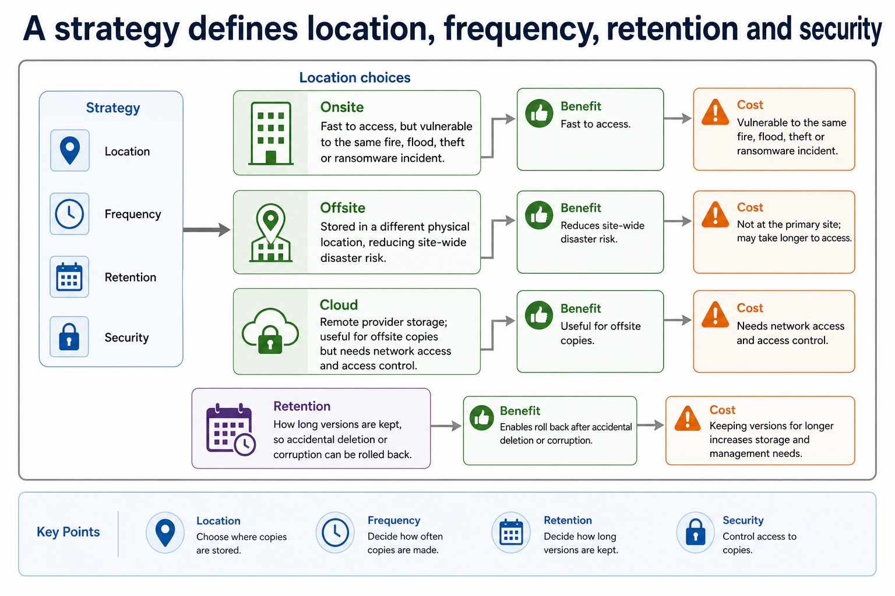
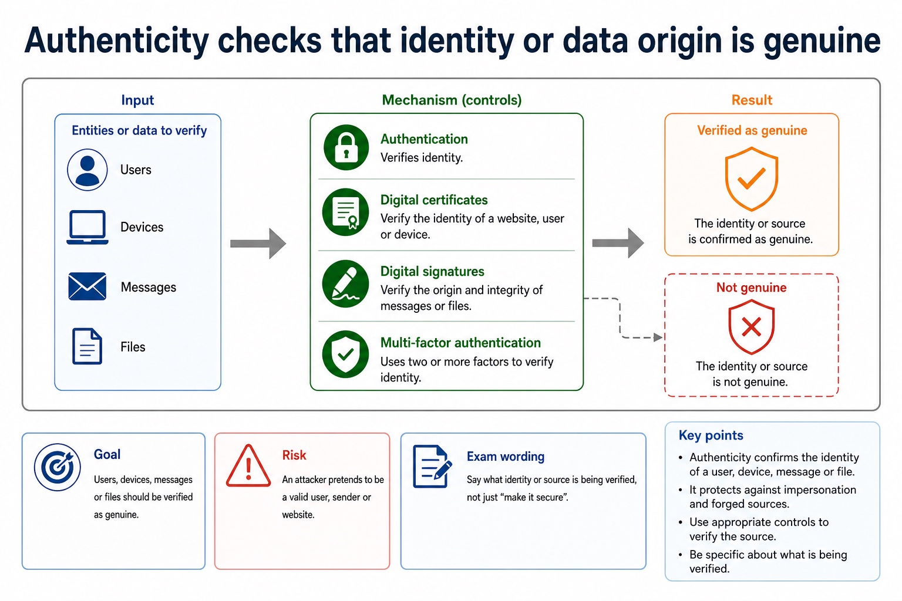
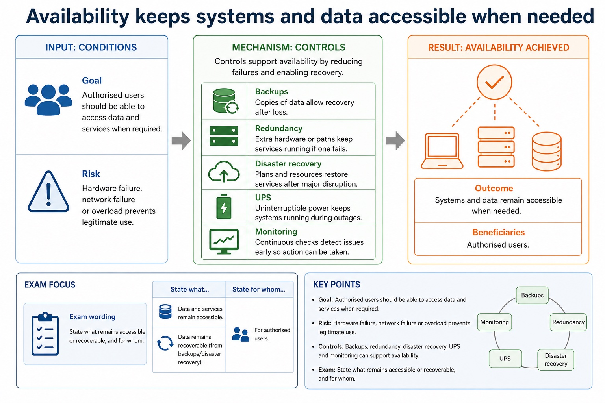
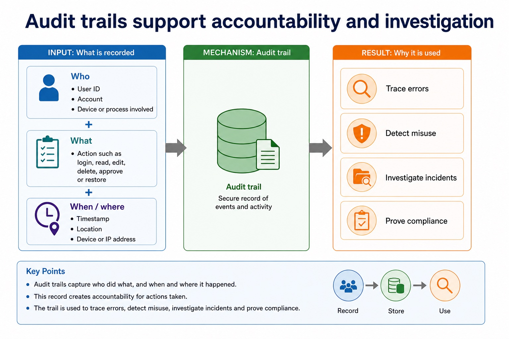
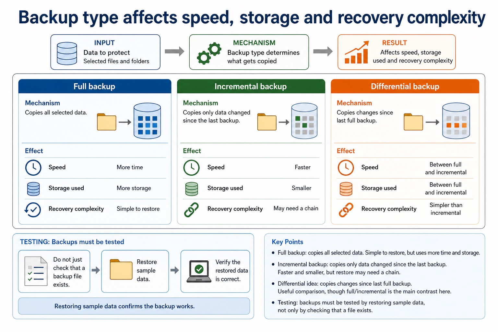
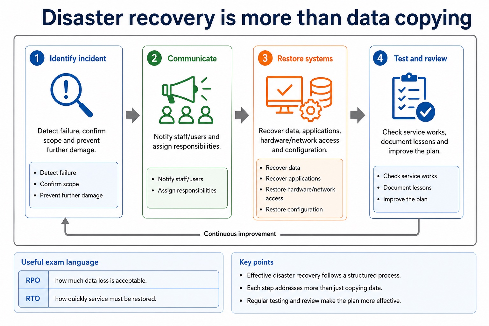
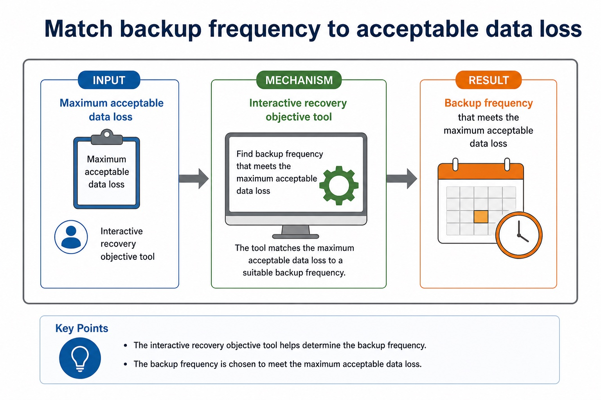

Cambridge AS9618 | Paper 1 | Section 6: Security, privacy and data integrity
Security, privacy, integrity and the need for protection
Flexible-depth lesson
S6.01, S6.02 | Learn from the diagrams, test the method, then choose the practice you need.
Choose a Quick, Full or Deep route
Quick route
Use the diagnostic, learning objectives, first worked example and foundation question. Stop once the learner can explain the central distinction accurately.
Full route
Use every knowledge-point material set, the worked method, the terminology check and all questions.
Deep route
Add the prerequisite refresher, ask learners to connect the concept checklist, discuss the labelled extension and complete a transfer question without a model answer.
Part 1 | optional depth
Prerequisite knowledge and quick diagnostic
Recall the main conclusion from Lesson 030: IDE features and practical debugging support.
Give one accurate definition or method step before continuing. If it is missing, revisit only that prerequisite.
Part 2 | knowledge-point material sets
Learn each point through visuals
Follow the map, the three-part explanation and the concrete cue. Open precise wording only after the idea is clear.
Open the concept checklist and choose what to teach
security
privacy
integrity
computer-system
data
01
S6.01 · comparison
Security · Privacy · Integrity
Concept map
securityprivacyintegrity
See how it works
Contrastevidence must not treat confidentiality, lawful/appropriate use and correctness/consistency as interchangeable
EvidenceDistinguish data security, data privacy and data integrity as separate concepts
Decisionevidence must explain why protecting one layer does not replace the other
S6.01 diagrams
1 / 3
01
Process · 1 of 3
Why security methods cannot substitute
Open text transcript
Encryption hides readable content from unauthorised viewers.
Hashing creates a comparison value for integrity checks.
Certificates bind an identity to a public key through trust.
02
Comparison · 2 of 3
Compare methods by evidence, risk and context
Open text transcript
Evidence
Strengths and limitations
Password/PIN
Something the user knows.
Low cost and familiar; can be guessed, reused, shared, phished or forgotten.
Biometric
Something the user is.
Convenient and hard to forget; needs sensors and may have false accepts/rejects or privacy concerns.
03
Concrete example · 3 of 3
Recovery planning is about availability, integrity and accountability

Open text transcript
Backup A separate copy of data that can be used to restore the original after loss or corruption.
Restore The process of recovering data or systems from a backup.
Disaster recovery Planned actions to restore systems and services after a major incident.
Audit trail A chronological record of actions, changes and access events.
Open precise syllabus wording
Distinguish data security, privacy and integrity.
Distinguish data security, data privacy and data integrity as separate concepts; evidence must not treat confidentiality, lawful/appropriate use and correctness/consistency as interchangeable.
02
S6.02 · concept
Protecting computer systems and data
Concept map
computer-systemsecuritydata
See how it works
Meaningevidence must explain why protecting one layer does not replace the other
MechanismShow appreciation of the need for both security of data and security of the computer system
ConsequenceBoth data security and computer-system security are necessary
S6.02 diagrams
1 / 3
01
Comparison · 1 of 3
Compare by purpose, not by "security word"
Open text transcript
Main purpose
Limitation
Restore data after deletion, corruption, hardware failure or ransomware.
May be too old, corrupted, inaccessible or affected by same incident.
Disaster recovery plan
Restore systems and services in a planned order after major disruption.
Needs testing, clear roles and updated documentation.
Audit trail
02
Analogy / use · 2 of 3
Why key ownership changes capability
Open text transcript
A symmetric key can both encrypt and decrypt shared data.
An asymmetric key pair separates public and private operations.
Protecting the private or shared secret preserves the security boundary.
03
Diagram · 3 of 3
A strategy defines location, frequency, retention and security

Open text transcript
Onsite Fast to access, but vulnerable to the same fire, flood, theft or ransomware incident.
Offsite Stored in a different physical location, reducing site-wide disaster risk.
Cloud Remote provider storage; useful for offsite copies but needs network access and access control.
Retention How long versions are kept, so accidental deletion or corruption can be rolled back.
Open precise syllabus wording
Explain the need for data and computer-system security.
Show appreciation of the need for both security of data and security of the computer system; evidence must explain why protecting one layer does not replace the other.
Supporting diagram library
1 / 9
01
Diagram · 1 of 9
Authenticity checks that identity or data origin is genuine

Open text transcript
Goal Users, devices, messages or files should be verified as genuine.
Risk An attacker pretends to be a valid user, sender or website.
Controls Authentication, digital certificates, digital signatures and multi-factor authentication can support authenticity.
Exam wording Say what identity or source is being verified, not just "make it secure".
02
Diagram · 2 of 9
Availability keeps systems and data accessible when needed

Open text transcript
Goal Authorised users should be able to access data and services when required.
Risk Hardware failure, network failure or overload prevents legitimate use.
Controls Backups, redundancy, disaster recovery, UPS and monitoring can support availability.
Exam wording State what remains accessible or recoverable, and for whom.
03
Diagram · 3 of 9
Confidentiality protects data from unauthorised access
Open text transcript
Goal Only authorised users should be able to view or access the data.
Risk Personal details, passwords or exam marks are viewed by unauthorised people.
Controls Access rights, authentication, encryption and least privilege can support confidentiality.
Exam wording Say who is prevented from reading what, and why they are unauthorised.
04
Diagram · 4 of 9
Integrity protects data from unauthorised or accidental alteration
Open text transcript
Goal Data should remain accurate, complete and unaltered unless changed by an authorised process.
Risk Exam marks, bank balances or stock levels are changed incorrectly.
Validation and verification Validation checks stated rules; verification checks entered or transferred data against its source, not whether the source is true or complete.
Other controls Access rights, checksums, hashes and audit trails can prevent, detect or record some changes, but no control guarantees integrity.
Exam wording Explain exactly how the named control prevents, detects or records an incorrect change.
05
Diagram · 5 of 9
Use the risk chain before naming a control
Open text transcript
Asset Something valuable that needs protection, such as exam marks, passwords or customer records.
Threat A possible cause of harm, such as unauthorised access, data corruption or service failure.
Vulnerability A weakness that a threat could exploit, such as weak passwords or poor permissions.
Control A safeguard that reduces likelihood or impact, such as access rights, backups or authentication.
06
Diagram · 6 of 9
Audit trails support accountability and investigation

Open text transcript
Who User ID, account, device or process involved.
What Action such as login, read, edit, delete, approve or restore.
When/where Timestamp, location, device or IP address.
Use Trace errors, detect misuse, investigate incidents and prove compliance.
07
Diagram · 7 of 9
Backup type affects speed, storage and recovery complexity

Open text transcript
Full backup Copies all selected data. Simple to restore, but uses more time and storage.
Incremental backup Copies only data changed since the last backup. Faster and smaller, but restore may need a chain.
Differential idea Copies changes since last full backup. Useful comparison, though full/incremental is the main contrast here.
Testing Backups must be tested by restoring sample data, not only by checking that a file exists.
08
Diagram · 8 of 9
Disaster recovery is more than data copying

Open text transcript
1. Identify incident Detect failure, confirm scope and prevent further damage.
2. Communicate Notify staff/users and assign responsibilities.
3. Restore systems Recover data, applications, hardware/network access and configuration.
4. Test and review Check service works, document lessons and improve the plan.
Useful exam language: RPO = how much data loss is acceptable; RTO = how quickly service must be restored.
09
Diagram · 9 of 9
Match backup frequency to acceptable data loss

Open text transcript
Interactive recovery objective tool
Maximum acceptable data loss
Apply the idea
Worked method
01Medical records on a compromised computer system
02Encryption restricts unauthorised reading of the record data.
03Access rights restrict who may view or alter it.
04Anti-virus and a firewall help protect the computer system that stores and processes the records.
05If malware controls the system, it may steal decrypted data, alter records or stop authorised access even though the stored file was encrypted.
Open precise terminology and exam facts
Distinguish data security, data privacy and data integrity as separate concepts; evidence must not treat confidentiality, lawful/appropriate use and correctness/consistency as interchangeable.
Show appreciation of the need for both security of data and security of the computer system; evidence must explain why protecting one layer does not replace the other.
Data security is protection against unauthorised access, loss or damage. Privacy concerns appropriate collection, use and disclosure of personal data. Integrity means data remains accurate, complete and unaltered except by authorised processes.
The concepts overlap but are not synonyms: encrypted inaccurate data may be secure but lack integrity; authorised publication may preserve integrity while violating privacy.
Both data security and computer-system security are necessary. Protecting only a data file is insufficient if an attacker can control the operating system, install malware, steal credentials or make the computer system unavailable; protecting only the device is insufficient if copied data is disclosed, altered or lost.
Beyond syllabus / 延伸知识（不要求背诵）
real security uses defence in depth, combining controls so that one failed control does not expose the whole system.
Part 3 | select by learner need
Practice by question type
compareevaluatefoundation5 marks
Question 1. Compare data security, privacy and integrity, then explain why both data and its computer system require security.
Show answer and marking guidance
Answer: security protects against unauthorised access/loss/damage; privacy controls appropriate personal-data use/disclosure; integrity concerns accuracy/completeness/authorised change; computer-system compromise can expose/alter/destroy data or prevent authorised access; data-specific and system controls are both required / one does not replace the other
Marking guidance: Do not accept repeated versions of 'keeping data safe' or the claim that file encryption alone secures the computer system.
Common error: For the command word compare, perform that exact action; do not replace it with an unrelated fact.
explainexplainapplication2 marks
Question 2. Why must the computer system also be protected?
Show answer and marking guidance
Answer: A compromised or unavailable system can expose, alter, delete or prevent access to the data it processes, even when a stored file has a separate protection such as encryption.
Marking guidance: Award one mark for each distinct, technically accurate point or method step.
Common error: Do not repeat the same point in different words; each mark needs a separate idea or method step.
applyrecalltransfer2 marks
Question 3. Can data be secure but inaccurate?
Show answer and marking guidance
Answer: Yes; access protection does not guarantee correctness.
Marking guidance: Award one mark for each distinct, technically accurate point or method step.
Common error: Do not copy the worked example unchanged; transfer the method and check it against the new context.
Related past-paper indexes
Reference
Marks
Command word
Question type
9618/12/W/23 Q5(a)
1
state
recall
9618/12/W/23 Q5(b)
1
state
recall
Index only: Cambridge question and mark-scheme wording is not reproduced on this public course page.
Part 4 | close when ready
Summary and exam reminders
Summary
Define security, privacy, integrity and the need for protection with the exact technical vocabulary expected by the syllabus.
Use the lesson method on a fresh context and show the intermediate decision, representation or calculation.
Match the shape of the answer to the command word and the available marks.
Check the final answer against the scenario instead of repeating a memorised sentence.
Common error to correct
Students often propose encryption for every problem. Correction: encryption protects confidentiality but does not fix poor permissions, phishing or missing backups.
Exam technique
Follow the command word: state gives a fact; explain links a cause to a consequence; compare covers both sides.
Match the number of independent points or method steps to the available marks.
For security, privacy, integrity and the need for protection, use the exact technical term before applying it to the scenario.